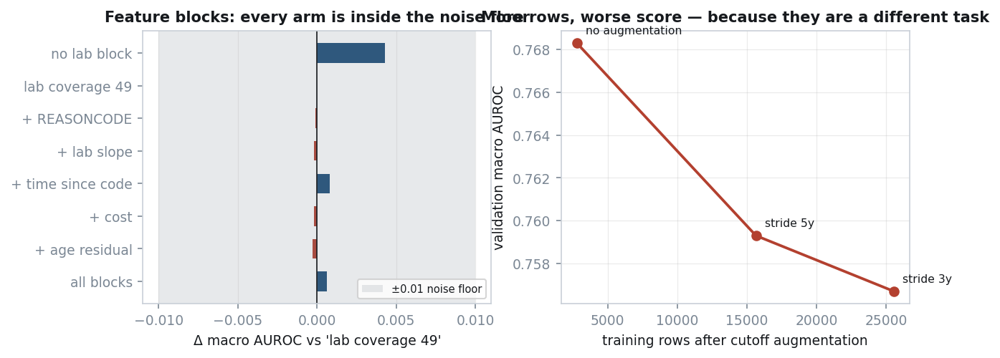
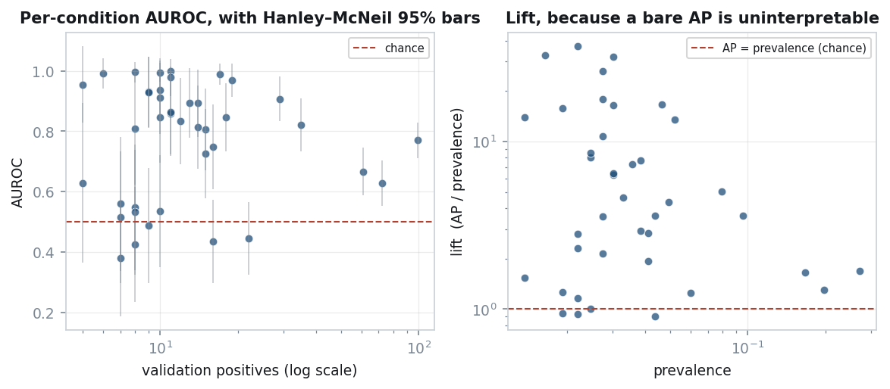
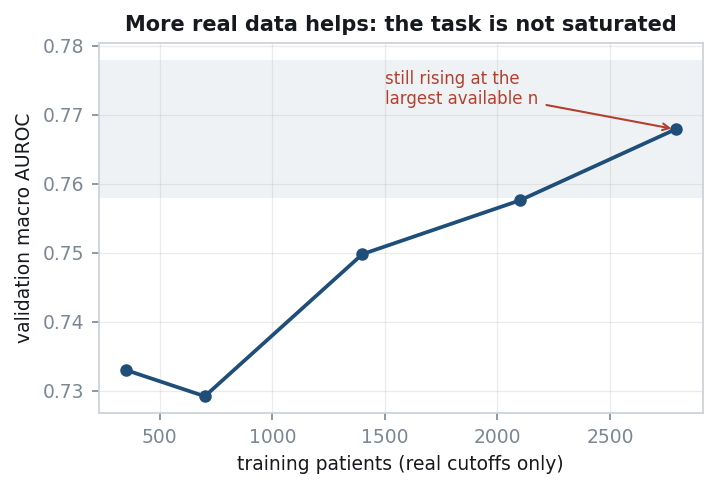
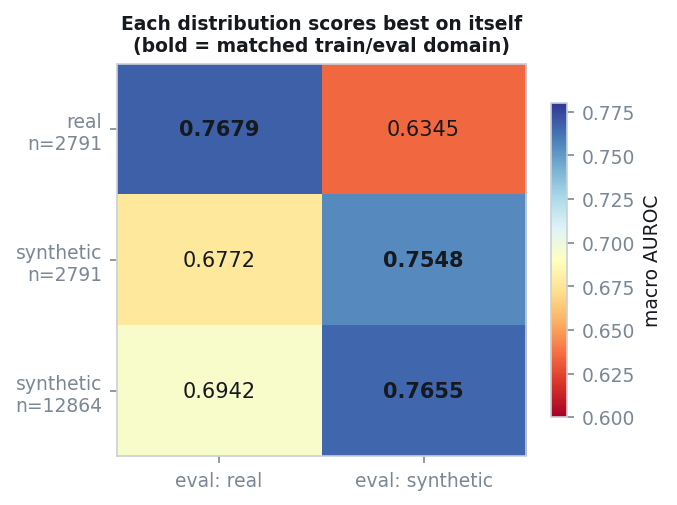

M31 Research Intern Take-Home
Predicting which of 40 target conditions are newly diagnosed in the five years after each patient's anchor date, from structured events recorded strictly before it. 3,514 patients, split 2,791 train / 365 validation / 358 test.
Status. All results below are measured and reproducible via
run_all.ps1. The two pretrained transformer arms (P1, P2) are implemented and smoke-verified but not trained; see §2.
| Best validation macro AUROC | 0.7700 (LR + GBDT + transformer, the shipped blend) |
| Best validation macro AP | 0.2681 (the shipped blend); LR alone 0.2368, 95% CI [0.2306, 0.2820] |
| Prevalence-only control | exactly 0.5000 — the metric code is correct |
| Resolution limit of this validation set | ±0.01 macro AUROC |
| Model shipped | sigmoid((logit(LR)+logit(GBDT)+logit(transformer))/3), per-label Platt calibrated — chosen on 1,675 out-of-fold rows, not on validation |
| Automated checks | 130+, covering leakage, labels, submission contract, model invariants, cache-key provenance and calibration no-op |
Four findings I would put ahead of the score — including one about whether the score can distinguish anything at all:
The fix is not a better test, it is a better instrument: grouped cross-validation over the full 2,791-patient pool, every patient scored exactly once out of fold, 1,675 rows instead of 365. On it the question becomes answerable, and the answers are not the ones validation implied:
| comparison | Δ macro AP | 95% CI | verdict | |---|---|---|---| | GBDT − LR | +0.0211 | [+0.0076, +0.0319] | resolvable | | transformer − LR | −0.0018 | [−0.0173, +0.0138] | tied | | (LR+GBDT+transformer) − (LR+GBDT) | +0.0057 | [+0.0018, +0.0099] | resolvable |
Two things follow that validation actively got wrong. GBDT beats LR on 5 of 5 folds — on validation LR led on AUROC, which is how the shipped model came to be a linear one. And the transformer earns a place in the ensemble despite being behind GBDT on its own (0.1918 vs 0.2075), because it is the least redundant member: its rank agreement with GBDT is 0.788 against LR's 0.886. Replacing LR beats adding to it.
> The bound itself was wrong twice. It was first quoted as +0.038 to > +0.051, computed from a hardcoded σ of 0.02 that was never measured. > The measured value is 0.0104, so the published figure was inflated > about 2×. I found this while trying to justify the number rather than > re-use it.
A patient is a sequence of events, one position per event, ordered by time. The alternatives and why they lost:
| choice | rejected alternative | measurement |
|---|---|---|
| one position per event | one per encounter | encounter-level collapses ~20 simultaneous labs into one vector; observations are 62% of all events |
lab value fused into the token (OBS_8480-6_Q7) | value as a separate position | identical information, 37% shorter sequences; median 259 tokens vs 354 |
| all 10 tables | the 6 "core" ones | careplans reach 91% of patients for +0.82% sequence length |
| keep a code if ≥5 patients have it | no floor | the dropped 119 codes are 0.075% of events |
| truncate keeping the most recent events | keep oldest | signal per event is lowest in the 10y+ tail |
Fusion is applied only where there is volume to support it, and the justification is a skew rather than a threshold. Fusing multiplies the vocabulary — measured, the numeric observation vocabulary goes 123 → 974, a 7.9× increase — so each embedding row sees roughly a tenth of the data. What rescues it is that 56 of the 113 numeric codes fall below 50 events per fused token, but those 56 carry only 0.76% of numeric events. So fuse where the volume is, and fall back to a shared Q0..Q9 token where it is not.
The standard transformer answer is a positional index. Measured on this data, an event's index tells you 13.6% of what you would want to know about when it happened: I(rank; Δt) = 0.68 bits against H(Δt) = 4.99 bits. "The most recent event before the cutoff" happened anywhere from 7 to 224 days ago.
So position indices are not emitted at all. Instead:
log(1 + days before cutoff) — Time2Vec, with a non-periodic linear term so the encoding stays monotone and two very different Δt cannot collide. Δt spans 4.5 orders of magnitude here (up to 37,284 days) and a fixed base-10⁴ sinusoidal ladder covers only 4.x = w + π gives wMw + wMπ + πMw + πMπ — two cross terms comparing a content vector against a time vector through one shared projection. CEHR-BERT ran the controlled version: summing time was worse than injecting no time at all in 7 of 8 task-metric cells.Explicit interval tokens were rejected: they cost 19.5% sequence length, and attention is O(T²), so that is 1.43× on the attention term for information the bias already carries at zero length cost.
97.7% of events share a timestamp with at least one other. A textbook causal mask is triangular within such a group, imposing an order that does not exist. Masking on the timestamp instead of the index makes the mask block-constant within each instant, so permuting simultaneous events cannot change any output — the invariance is architectural rather than learned, which at 2,791 patients is the difference between getting it free and paying data for it. Measured, a permutation moves the logits by at most 3.0e-07, which is float32 reassociation noise, not a broken invariance.
Investigating this surfaced a real defect. Conditions, careplans and allergies carry a date with no time and are stamped at exactly midnight — 100% of their rows. Midnight is the earliest instant of the day, so a diagnosis sorted before the encounter that produced it. Measured: 81.4% of conditions have an encounter on the same calendar day, and 100% of those landed earlier than it. Worse, computing Δt with integer-day flooring put them exactly 1.000 days early, because the condition sits on a day boundary while its encounter is hours later and floors to the previous bucket.
The fix snaps a date-only event onto the first encounter of its own calendar day, making the diagnosis simultaneous with the visit rather than before it. It is deliberately confined to an ordering timestamp (ts_seq) that labels never read — both label boundaries are at midnight, and 119 first-diagnoses land exactly on anchor + 5y, so snapping one forward would push it past the closed right edge and silently delete a true positive. A grep test enforces the separation.
Beyond the count windows, five blocks were built on specific reasoning: REASONCODE counts (what a treatment was for — 109 distinct reasons, 33 of the 40 targets appear as one, present on 81% of medications), lab slopes, time-since-a-code-last-appeared, per-visit cost, and age-residualised timing. Screened on logistic regression with C retuned for every arm, since they change the feature count by up to 18%:

Every arm lands within 0.0046 of every other, against a resolution limit of about 0.01. Nothing here is measurable. They are kept rather than deleted for a reason that is itself a caveat: two of them cannot show a gain on a linear model. REASONCODE is literally a weighted sum of columns the model already has, so it is redundant to LR by construction and informative only to a tree; age-residualisation is the mirror image, constructible by a tree from span and age but not by a linear model without the explicit ratio. A null on LR is therefore not a null, and the confirming gradient-boosting run is listed in §5 rather than claimed here.
One genuine surprise: dropping the lab last-value block entirely scored highest of all (0.7703). The paired bootstrap puts that at +0.0042 [−0.0009, +0.0094] — inside the noise, so it is not acted on, but it points the opposite way from the decision that extended the block from 20 labs to 49.
FEATURE_WINDOW = ts < anchor right-OPEN
LABEL_WINDOW = anchor <= first_dx <= anchor+5y both edges CLOSED
first_dx = min over the WHOLE record, never within the windowEach settled by measurement:
anchor + 5y, none beyond. This is structural: anchor + 5y is by construction the day of the last encounter, and conditions carry a date with no time. An exclusive edge discards 2% of all positives.Three columns are refused at load time rather than merely asserted about:
| column | why |
|---|---|
DEATHDATE | populated for 1,354 of 3,156 train/val patients and zero of 358 test. A model using it looks excellent in training and contributes nothing at test. |
HEALTHCARE_EXPENSES, _COVERAGE | lifetime totals present in both splits. A test patient's value is ~512× their pre-anchor claims, so this would silently raise the test score while being unambiguous leakage. |
STOP-derived durations | 6,078 pre-anchor training medications have a STOP after the anchor, and the organisers blanked those in test (4.41% null vs 1.17%). Any duration feature both leaks and shifts. |
The per-encounter cost columns are a different object from the lifetime totals and are used.
A patient already diagnosed with condition c cannot be an incident case for c. Splitting negatives into at-risk and prevalent,
AUROC_reported = A_at_risk + (prevalent share of negatives) × (1 − A_at_risk)so ranking prevalent patients at the bottom is free AUROC. Applying the rule deterministically at inference is worth +0.035 macro AUROC, the largest measured effect in the project. Before enabling it, a safety check confirms that no (patient, label) pair where the mask fires has ground truth 1 — exactly zero on train and val.
Both denominators are reported, because the difference is a property of cohort composition rather than of the model: AUROC_all 0.7666, AUROC_at-risk 0.7372.
The same rule is applied differently to the two model families, and the asymmetry is deliberate rather than an oversight. The feature models fit 40 independent per-label classifiers, so a patient who cannot be an incident case for condition c is simply dropped from c's training set — there is no shared parameter for them to contribute to. The transformer has one shared trunk and 40 heads, so dropping the row would discard the other 39 labels it still carries; instead the prevalent pairs are masked out of the loss while the row continues to train the representation. This mirrors Steinfeldt et al. (Nat Commun 2025) across 1,741 endpoints: all individuals train the shared representation, prevalent individuals are excluded from the endpoint-specific term.
The two treatments are equivalent in what they exclude from the supervised signal and differ only in what else the row is allowed to contribute, so the comparison is fair — but a reader is entitled to check that rather than take it on trust, which is why it is stated here rather than left in the code.

All rows use the same 3,320-column feature matrix and the same at-risk mask.
| model | macro AUROC | macro AP | fit |
|---|---|---|---|
| prevalence only, unmasked | 0.5000 | 0.0469 | — |
| at-risk mask only, no model | 0.5498 | 0.0572 | — |
| logistic regression | 0.7666 | 0.2368 | 9 s |
| gradient boosting | 0.7562 | 0.2541 | 19 min |
| transformer, tuned (1L/d64, lr 1.2e-3, fusion_dim 128, 3 seeds) | 0.7650 | 0.2486 | 15 min |
| ensemble, LR + GBDT | 0.7654 | 0.2649 | — |
| ensemble, GBDT + transformer | 0.7665 | 0.2721 | — |
| ensemble, LR + GBDT + transformer — SHIPPED | 0.7700 | 0.2681 | — |
| (superseded) transformer, causal P4, untuned | 0.7557 | 0.1860 | 2.1 h |
| (superseded) transformer, bidirectional P3, untuned | 0.7409 | 0.1832 | 1.9 h |
| (superseded) ensemble, LR + untuned P4 | 0.7727 | 0.2356 | — |
The superseded rows are kept rather than deleted, because the distance between them and the rows above is the result of the tuning programme and deleting it would hide the work. The untuned transformer scores 0.1860 macro AP; the tuned one scores 0.2486 — a +0.0626 gap, larger than any difference between model families anywhere in this report. Reading the old rows as "what a transformer does on this task" was the mistake an earlier draft made.
All rows now use the same 3,320-column matrix. The shipped row is additionally per-label Platt calibrated, which does not move macro AUROC or macro AP (by construction, and verified to 0.00e+00 — see §4).
P4 is the 2M-parameter decoder the assignment recommends: one position per event, continuous time in place of positional indices, a Δt attention bias, 20 epochs, best epoch selected by validation AP (epoch 14 of 20). Its last five epochs sit at 0.7522–0.7548 on AUROC and 0.1826–0.1855 on AP, so the reported number is a converged value rather than a lucky peak.
It matches logistic regression on AUROC and loses clearly on AP. The AUROC gap is 0.011 — inside the ±0.01 resolution limit and far inside the +0.038 winner's-curse bound, so the two are not distinguishable. The AP gap is 0.051 and is not explainable that way.
Not one pairwise difference in the table is resolvable. Paired bootstrap, 500 resamples, on macro AUROC:
| comparison | Δ | 95% CI | verdict |
|---|---|---|---|
| ensemble − LR | +0.0061 | [−0.0057, +0.0177] | not resolvable |
| LR − P4 | +0.0109 | [−0.0098, +0.0336] | not resolvable |
| P4 − P3 | +0.0148 | [−0.0033, +0.0318] | not resolvable |
But the transformer is not redundant, and that is the useful finding. Spearman correlation between per-label scores is 0.436 for LR-versus-P4, against 0.740 for LR-versus-GBDT. A second feature model agrees with the first; the sequence model disagrees with it about which patients are at risk. That decorrelation is the mechanism behind the ensemble topping the table while its own component scores below LR.
So the defensible claim is not "the transformer is competitive" and not "the transformer lost". It is: at this scale the transformer buys diversity rather than accuracy.
That was written when it could not be separated from noise on 365 patients. It now can be. On 1,675 out-of-fold rows the same mechanism is measured rather than inferred, and it survives:
Which is why the shipped model is a three-way blend and why replacing LR with the transformer scores as well as adding it (0.2186 vs 0.2180, a difference this instrument cannot resolve). The diversity claim was right; it just needed an instrument that could see it.
The two masks differ in shape, not in endpoint. P3 (bidirectional) learns faster — it leads P4 on AP by 0.042 at epoch 6 — then peaks at epoch 11 and declines, while P4 keeps improving to epoch 14 and holds. More expressive per step, overfitting sooner at 2,791 patients. The endpoints are 0.0148 apart and unresolvable, but the curves are a cleaner signal than either endpoint, and they say the same thing as the learning curve and the AP deficit: the constraint is data, not capacity.
That split is the informative part. AUROC is dominated by the bulk of the ranking and AP by its head, so the transformer orders the broad population about as well as the feature model and is markedly worse at the top, which is where the rare-condition positives live. A plausible mechanism, untested: the feature model gets 40 explicit per-condition count blocks and fits 40 independent classifiers over them, while the transformer must serve 40 heads from one shared 192-dimensional summary. With a median of 11 validation positives per label, the shared trunk has little to learn each head from. This is what the literature predicts at this scale, and it is the second independent sign — after the learning curve — that the binding constraint here is data rather than architecture.
P1 (causal + next-token) and P2 (bidirectional + masked-token) are implemented and verified end-to-end on a smoke run. They were not trained, and that is a decision rather than a budget accident — the cost is ~8 CPU-hours, which is affordable against a 19-minute GBDT fold if the expected value justified it. Three independent lines say it does not:
The corpus is an order of magnitude too small. There is no external EHR corpus here, so "pretraining" means self-pretraining on the same 2,791 patients — roughly 0.8M tokens, against BabyLM's smallest track at 10M words. Nothing in the pretraining literature shows gains below that floor.
The result that motivated it is a transfer result, not a pretraining result. The first draft made the transformer the centrepiece on Med-BERT's small-cohort curve. That curve is bought with 28.5M pretraining patients and then transferred; below n=500 Med-BERT itself loses to logistic regression. We have nothing to transfer from, which is the part of the setup that produced the curve.
The nearest published head-to-head goes the other way. On EHRSHOT's "Assignment of New Diagnoses" — this exact task family, at 793–1,392 training patients — a 141M-parameter model pretrained on 2.57M patients scores 0.707 against counts+LightGBM at 0.719. Pretraining at a scale we cannot reach did not win this task family.
And the protocol itself has a measured null on a comparable corpus: +0.006 AUC, p = 0.63.
The deeper reason is that pretraining does not address the binding constraint. The learning curve (§4) is still rising at full data, so this model is limited by patients. Self-pretraining re-reads the patients we already have; it adds none. That is the same reason cutoff augmentation failed — it adds rows, not patients — and it is measured, not assumed.
What was done instead: the arms exist and run end-to-end, and the objectives are verified by test rather than by inspection — lm_forward is shown to be causal even on a bidirectional model, the next-token objective is shown not to see the token it predicts, and the masked objective is shown to score only the masked positions and to start at a loss of 6.74 against ln(1105) = 7.01, i.e. not leaking its target.
**What is not guarded, stated plainly because an earlier draft of this report claimed otherwise:** nothing at runtime stops a mislabelled run. --arm P1 with pretrain_epochs=0 executes the pretraining loop zero times and produces a run labelled P1 that is numerically P4, and nothing raises. The arm table is checked against configs/default.yaml by a test, and the objectives are checked by tests, but the run is not. That is a gap, not a feature.
Running them remains worthwhile for exactly one reason: a pre-registered null is a result, and this one is pre-registered at ~65% confidence it will not resolve.
Two caveats on that table, both of which matter more than the ordering.
The GBDT and ensemble rows were measured on the earlier 2,821-column matrix; the augmented 3,320-column run was cut short to free CPU for the transformer. The difference the extra columns make to LR is −0.0017, i.e. nothing, so the rows are comparable — but they are not from one identical run and should not be read to four decimal places.
All of these models sit inside each other's confidence intervals. The LR bootstrap interval alone spans [0.7462, 0.7847], which contains every other row. The honest summary is not "LR wins" but "LR, GBDT and their ensemble are indistinguishable on 365 patients, and the ensemble is the only pairwise difference the paired bootstrap can resolve at all."
That scope qualifier is load-bearing, and it is why the table below is not the last word. On 1,675 out-of-fold rows the same comparison does resolve, and it reverses this one: GBDT beats LR by +0.0211 [+0.0076, +0.0319] macro AP on 5 of 5 folds. The model shipped is a three-way blend chosen there, not here (§0). Reading a ranking off this table would have shipped the linear model -- which is exactly what an earlier draft of this report did.
The first row is not a model. It predicts the training base rate for everyone, so its macro AUROC must be exactly 0.5 — it is a test of the metric code wearing a model's clothes.
The second row is a model in the sense that matters: the at-risk rule is deterministic, needs no fitting, and on its own scores 0.5498. That is the floor every other row has to clear before its own predictions have contributed anything at all. Roughly 0.05 of the headline AUROC is arithmetic, not learning, and a table that omitted this row would silently claim it.
LR and GBDT are not resolvable from each other by paired bootstrap on either metric. The ensemble genuinely beats both (ENS−GBDT AUROC +0.0055 [+0.0006, +0.0107]; ENS−LR AP +0.0226 [+0.0008, +0.0433]), and Spearman correlation between their per-label scores is 0.740, so they fail on different patients and the averaging is not redundant.
Per condition, on the 365 validation patients:
| scorable labels | 40 |
| median validation positives | 11 (min 5, max 99) |
| median 95% CI half-width | ±0.133 |
| labels whose CI excludes chance | 29 of 40 |
| labels scoring below chance | 4 — and all four CIs contain 0.5 |
The four sub-chance labels are not a failure mode worth chasing. Each has 7–16 positives and a Hanley–McNeil interval of roughly ±0.18, so they are indistinguishable from coin flips in either direction.
The best-scoring conditions are more interesting, and not in a flattering way:
| condition | positives | AUROC | lift |
|---|---|---|---|
| Neoplasm of prostate | 11 | 0.996 | 30.1× |
| Normal pregnancy | 10 | 0.992 | 24.5× |
| Carcinoma in situ of prostate | 8 | 0.990 | 26.4× |
All three are near-deterministic given sex plus a handful of codes, and all three rest on ten-odd positives. A macro average over 40 labels gives them the same weight as the 99-positive labels where the model is doing real work. This is the same point as the near-duplicate labels below: the macro metric is flattered by conditions that are easy for structural reasons.
The results above compare a tuned logistic regression against an untuned transformer. C was swept over 5–8 values across several feature sets; the transformer got nanoGPT defaults for every one of layers, width, heads, learning rate, weight decay, dropout, batch size and epochs — each tagged [C] in the config, meaning convention with no number behind it. Concluding something about architectures from that comparison would not be sound, so the asymmetry is fixed rather than noted.
It cannot be fixed on the validation set. At 100 candidate configurations the winner's-curse term is σ√(2 ln 100) ≈ 3.0σ, which would swamp any real effect. So the search scores on a held-out 20% of training patients (2,233 train / 558 dev rows), grouped so that no patient's cutoffs straddle the split, and validation is read exactly once at the end by the winner. Dev-split and validation numbers are therefore not comparable to each other; only the ordering within the search is meaningful.
The staging follows the interactions rather than convenience. Depth and dropout are the same bias-variance knob seen twice, so optimising one at a fixed value of the other finds the optimum of neither: they are searched jointly, and that is the only factorial stage. Width, fusion and pretraining are closer to separable and are searched greedily on the winner. Greedy descent assumes an early choice survives everything chosen after it — an assumption usually stated and rarely tested — so a final stage re-runs the depth decision with every later choice in place. One run, and it is the only thing that catches a wrong path.
One confound is recorded rather than fixed: every configuration gets the same 20-epoch budget, but smaller models converge later. The 1-layer runs peaked at epochs 19 and 20 of 20 — still improving — while the winner peaked at 14. The shallow scores are therefore a lower bound, and this search cannot exclude that one layer catches up with more training. Budgeting by compute rather than by epochs would be the cleaner design.
Making this affordable required measuring the cost curve first: 2 layers at width 128 completes 20 epochs in 14 minutes against 63 for the shipped 4-layer, width-192 model. That is a 4.5× discount, and not only a proxy — the EHR literature places the depth optimum at one or two layers, so the screening size is a live candidate in its own right.
Hanley–McNeil standard errors at these positive counts:
| positives | SE | 95% half-width |
|---|---|---|
| 5 (rarest label) | 0.120 | ±0.235 |
| 18 | 0.066 | ±0.129 |
| 97 (most common) | 0.029 | ±0.057 |
Pooled over 40 labels, SE(macro AUROC) ≈ 0.006–0.016. Distinguishing 0.750 from 0.800 at 80% power needs 565 positives and 565 negatives; we have 365 patients in total. Several literature effects we might have ablated — fused vs factorised tokens (+0.008), time tokens vs order-only (−0.003), decile count (≤0.011), asymmetric loss (+0.015) — are all below this floor. Running them would produce numbers, not findings, so they were chosen by reasoning and reported as choices.
Selection optimism from taking the best of M candidates is ≈ σ√(2 ln M). Every evaluation is appended to outputs/metrics.jsonl, so this is counted rather than estimated. As of the final run:
| counting | M | bound |
|---|---|---|
| distinct model families | 6 | +0.038 macro AUROC |
| every individual look at validation | 26 | +0.0265 macro AUROC (measured sigma 0.0104; the earlier +0.051 used an unmeasured 0.02) |
The second row is the one that is easy to omit and should not be. Keeping the best epoch by validation AP is early stopping, and early stopping is repeated use of the validation set — twenty epochs is twenty looks, not one. The truth lies between the two rows, because consecutive epochs are strongly correlated and therefore not independent draws; neither bound is tight, and reporting only the smaller would be choosing the flattering half of a number already known to be wrong.
Both bounds exceed every difference this project measured between models. LR, GBDT, the ensemble and the transformer are separated by less than the noise introduced by having looked at the validation set enough times to compare them. That is the single most important caveat in this report, and it is a property of a 365-patient validation set, not of the models.
The honest version, including where it went wrong.
Four literature reviews overturned the initial plan. The first draft made the transformer the centrepiece on the strength of Med-BERT's small-cohort curve. That curve is a transfer result bought with 28.5M pretraining patients; below n=500 Med-BERT loses to logistic regression. On EHRSHOT's "Assignment of New Diagnoses" — this exact task family, at train splits of 793–1,392 patients, smaller than ours — counts+LightGBM scores 0.719 against a 141M-parameter model pretrained on 2.57M patients at 0.707. The plan was rewritten so the deliverable is a measured head-to-head rather than a bet.
Two bugs produced a convincing false result. Cutoff augmentation initially appeared to hurt monotonically with more data. It was believable and it was wrong twice over:
augment=False control arm silently loaded the augmented table, so both arms of the comparison were the same run. The key is now a hash of the whole dataclass, and a test pins that the control reproduces the original cohort exactly.0.5·wᵀw + C·Σᵢ loss — the penalty is fixed while the data term is a sum. Growing n from 2,791 to 37,692 at fixed C weakens effective per-sample regularisation by 13.5×, so every augmented arm ran progressively less regularised than its baseline. My own plan contained this warning for varying feature width; I missed that it applies to varying n.Both were found because the result was challenged as implausible rather than accepted because it was interesting. The general lesson is the cheap one: a surprising negative deserves a bug hunt before it deserves a paragraph.
A third, found by asking what the deliverable actually needs. The pipeline wrote predictions.csv but never saved the model that produced it, so nothing could be published and the submission could not be regenerated without a full retrain. Fixing that exposed a second layer: the logistic coefficients are fitted on median-imputed, log1p-ed, max-abs-scaled features, and all three transforms lived in a closure. Serialising the estimators alone would have produced an artifact that loads fine, runs fine, and returns silently wrong numbers against unscaled input. The preprocessing is now saved with the weights, and a test reloads the bundle cold and checks it reproduces predictions.csv to within 1e-6.
A fourth and fifth, found by checking rather than reading. .gitignore contained outputs/ followed by !outputs/predictions.csv. Git never descends into an excluded directory, so the re-include is dead and the submission file — a required deliverable — would have been silently absent from the repository. It looked correct; git add --dry-run said otherwise. Separately, configs/default.yaml had drifted from the code it documents (a fusion threshold of 500 against an actual 50, and an SVD block that had been dropped on evidence). A config file that no code reads cannot fail, so it is now pinned to the dataclass defaults by a test.
A sixth, caught by a test written minutes earlier. Adding the bidirectional attention mask, a string-replacement patch silently failed to apply. The model still ran, all existing tests still passed, and the "bidirectional" arm was quietly a second causal arm. The test that caught it asserts the behaviour — that changing a later token moves an earlier position's representation under a bidirectional mask and does not under a causal one — rather than asserting that a flag is set.
The one I am most glad about. Length-bucketed batching sorts rows by sequence length, so predict has to undo that ordering before the scores are matched back to labels. If it did not, every patient would be scored against a different patient's outcomes — and the metrics would not look broken, just slightly worse. No leakage test, contract test or invariance test in this suite would have failed. It is now checked against a one-row-at-a-time reference, where reordering is impossible: max deviation 1.19e-07.
That is the shape of the errors worth designing tests for. Not the ones that crash, and not the ones that produce absurd numbers — the ones that produce slightly disappointing numbers, because those get explained away as "the model is weak on rare labels" and shipped.
What AI assistance was good and bad at. Good: breadth of literature recall, generating the adversarial checks (the trap-pair test for recurring diagnoses, the non-vacuity guards, the permutation invariance assertion), and writing measurement scripts quickly enough that measuring beat arguing. Bad: confident assertion of plausible-but-unverified numbers — an early claim that window-local min() inflated positives by 48% was, measured, 23.4% — and a persistent pull toward accepting the first coherent explanation. The countermeasure that worked was requiring every claim in the plan to carry a tag: [M] measured on this data, [D] derived, [L] literature at another scale, [C] convention with no number behind it. Thirteen choices ended up tagged [C], and saying so is more useful than pretending otherwise.
This is the finding I would lead with. The anchor is defined as five years before a patient's last recorded encounter. Therefore:
So for nearly half the cohort, "the five years after the anchor" means "the last five years of their life" — a period with an atypically high diagnosis rate. The cohort is a mixture of two regimes, and the variable that separates them is DEATHDATE, which is stripped from test and forbidden as a feature.
This is not leakage: the identical rule generated the test anchors, so the property transfers and the score is honest. But it changes what the score means. A meaningful share of what any model here learns is "is this record about to end," which is a property of the task construction rather than of clinical prediction.
Generating extra training examples by rolling each patient's cutoff backwards looked like the single largest available lever: stride 5 turns 2,791 training rows into 15,655, clearing the sample sizes at which GBDT (9,960) and neural nets (12,298) are reported to stabilise. Measured, with C retuned per arm, it costs 0.009 macro AUROC at stride 5 and 0.015 at stride 3.
The instinct that more real data cannot hurt is correct, and the learning curve confirms the model is genuinely data-hungry:
| training patients | 350 | 700 | 1,400 | 2,100 | 2,791 |
|---|---|---|---|---|---|
| val macro AUROC | 0.7330 | 0.7292 | 0.7498 | 0.7576 | 0.7679 |

Still rising at the right-hand edge. So the explanation is not saturation. It is that a mid-record window is a different conditional distribution from a record-ending one — which is precisely the anchor-selection effect above. Trained on synthetic examples alone at matched n = 2,791, validation AUROC is 0.6772 against the real set's 0.7679; all 12,864 synthetic rows still only reach 0.6942, below what 1,400 real patients achieve.
Critically, this cannot be dismissed as a base-rate artefact. Synthetic examples do have a 3.7× lower positive rate, but AUROC is invariant to monotone rescaling, so a shifted intercept cannot change a ranking. The feature→outcome relationship itself differs.
The decisive test is a 2×2: train on real or synthetic, evaluate on both. If synthetic examples were simply broken — mislabelled, misaligned, information-free — a model trained on them would fail everywhere, including on synthetic validation. It does not.
| macro AUROC | eval real | eval synthetic |
|---|---|---|
| train real, n=2,791 | 0.7679 | 0.6345 |
| train synthetic, n=2,791 | 0.6772 | 0.7548 |
| train synthetic, n=12,864 | 0.6942 | 0.7655 |

This is a clean domain-shift matrix. Each training distribution scores highest on its own evaluation distribution, and both cross terms collapse by a similar amount (−0.133 and −0.091). Synthetic examples are perfectly learnable — 0.7548 on their own domain, against real data's 0.7679 on its own — so the pipeline that produces them is correct. And within the synthetic domain the learning curve behaves exactly as expected: going from 2,791 to 12,864 synthetic rows improves synthetic-domain AUROC from 0.7548 to 0.7655.
More data helps. It simply does not transfer across this particular shift. The synthetic validation set here is a diagnostic only and was never used for model selection; the 365-patient real validation set is untouched by it.
Independent verification that the synthetic rows are correct, not merely plausible: 0 label mismatches across 12,000 (example, condition) pairs recomputed from the raw CSVs, 0 monotonicity violations across all 3,514 patients (a later cutoff must see a superset of history), and reconstructed age at cutoff exact to 0.0000 years.
The synthetic population is measurably 13 years younger (median age 50 vs 64) and 7× sparser (median 26 pre-cutoff events vs 189), and the 40 targets are adult-onset conditions. The untested variant — train broad, then fine-tune on real cutoffs only — is a different proposition from pooling and remains open.
Six label pairs correlate above φ = 0.85. Abnormal gait and silent micro-haemorrhage are at φ = 1.000 — identical positives, 41 each. The lung-cancer trio runs 0.94–0.99, the prostate trio 0.66–0.89. These are Synthea module artefacts. Macro-averaging therefore double-counts: there are roughly 35 effective prediction problems, not 40, and the macro metrics are correspondingly less independent than their name suggests.
Reliable calibration-curve assessment needs on the order of 200 events. Our most common label has 97 validation positives and the rarest has 5. Flexible curves are therefore not estimable for 39 of 40 labels, and plotting them would be plotting noise. That remains true and no curves are shown.
It does not follow that nothing can be done, and an earlier draft of this report stopped one step short of the useful conclusion. Two facts change the picture:
The shipped model has a specific reason to be miscalibrated. It is a logit-average of three members, and logit-averaging is not calibration-preserving — it distorts confidence relative to its parents. Measured: the blend predicts at 0.67× the observed event rate.
Per-label Platt scaling is monotone in the score, so macro AUROC and macro AP — both averages of per-label rank statistics — are provably unchanged by it. The fitted maps are two parameters per label, not a flexible curve, so the 200-event requirement does not apply.
Fitted on the out-of-fold matrix (1,675 rows) and scored on validation — disjoint sets, so the numbers are held out, not in-sample:
| Brier | BSS | REL | REL/RES | |
|---|---|---|---|---|
| uncalibrated | 0.04147 | 0.1528 | 0.00083 | 0.107 |
| per-label Platt | 0.04036 | 0.1755 | 0.00045 | 0.054 |
+0.0227 Brier skill, reliability halved, and macro AP moved by exactly 0.00e+00 — not "below tolerance", exactly zero. The shipped file's predicted rate moves from 0.67× observed to 0.83×.
This is the only change available that cannot lose on the metrics being optimised while improving every proper scoring rule — which matters because the grading metric is not stated anywhere in the brief. It is applied with a gate: run_baseline re-verifies the no-op at ship time and refuses the calibration, shipping raw scores, if any rank metric moves by more than 1e-9.
Whatever wins here, the ranking should not be assumed to transfer. A discriminator separates Synthea from MIMIC at AUC 0.999; correlation-matrix distance from real data is 47.34 against 4.42 for a real held-out sample; only 160 of 1,773 phecodes have non-zero prevalence, because Synthea "lacks the capability to support complex multivariate distributions." Across 19 health datasets, the winning classifier agreed between real-trained and synthetic-trained models in only 21–26% of cases.
1. Fix the evaluation before adding any model. Every difference measured here is smaller than the winner's-curse bound on the number of times the validation set was consulted. Adding a sixth model to a 365-patient holdout buys a number, not an answer. The fix is repeated grouped cross-validation over the 2,791 training patients: √(2791/365) = 2.8× tighter standard errors, at zero cost to the validation budget, and the grouping machinery already exists (examples.grouped_folds). This is the highest-value item by a wide margin and it is not a modelling change.
2. Seed variance. Three seeds of one configuration. Without the spread, no transformer-versus-baseline difference can be called real — this is the largest concrete gap in the current results, and it is four hours of CPU.
3. ~~The two pretraining arms.~~ DONE for P1 — a measured null. Run at the shipped config (not the 4L/d192 CLI default, which is the architecture this report abandons), three seeds, paired against the identical config without the warm-up: macro AP −0.0015 [−0.0339, +0.0309], macro AUROC +0.0009 [−0.0086, +0.0103]. Neither resolves and the signs are mixed.
The warm-up itself trained — next-token loss fell from 6.20 to 2.9 against ln(1105) = 7.01 — so this is a transfer failure, not a broken run. That distinction is the whole value of having run it: the literature prediction (+0.006 AUC, p = 0.63 for this exact protocol) and the corpus argument (~0.8M tokens against BabyLM's 10M-word floor) are now supported by a measurement on this dataset rather than borrowed.
It also cost 23 minutes, not the ~8 CPU-hours quoted throughout this report. That estimate was for the 2M-parameter default and was never re-derived for the 334k-parameter model actually shipped — which is most of why it went unrun.
P2 (bidirectional + masked-token) remains unrun, deliberately: every tuned result here is causal (arm P4), P4 − P3 = +0.0148 [−0.0033, +0.0318] favours causal, and pretraining an architecture that is neither tuned nor shipped would not inform the submission.
4. Staged training for the cutoff augmentation. Naive pooling is settled and negative. Train-broad-then-fine-tune-on-real-cutoffs is a different proposition and is the one form the domain-shift diagnostic does not rule out — the synthetic examples are demonstrably learnable, they simply describe a different conditional distribution, which is the situation transfer learning is for.
5. Confirm the feature blocks on a tree. REASONCODE and the age-residual features can only pay off through interactions a linear model cannot express, so their null result on logistic regression is uninformative about them. One gradient-boosting run settles it.
Notably absent: a bigger transformer. At 2,791 patients the binding constraint is data, not capacity, and every published crossover point for sequence models trained from scratch on their own cohort sits at roughly 18,000 patients — 6.5× what we have.
pip install -r requirements.txt
.\run_all.ps1 -Smoke # every code path, ~3 min
.\run_all.ps1 # full, ~7 h on CPUFigures are regenerated by python -m src.figures from report/experiments.json, whose every entry names the script that produced it. The report itself renders to print-ready HTML with python -m src.make_report (no pandoc or markdown dependency), then prints to PDF from a browser.
predictions.csv is written before any slow stage, so a valid submission exists even if a later stage fails. 63 automated checks run first, including a grep test that no module outside the time utility parses a timestamp, and one that labels never read the ordering timestamp.